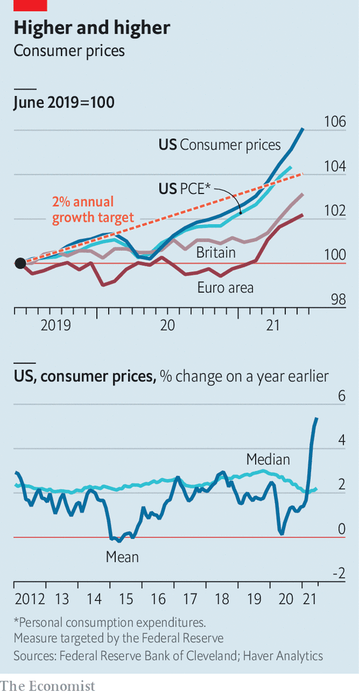

CONSUMER PRICES rose by 5.4% in the year to June in America, and by 2.5% in Britain—both well above economists’ expectations. Speaking to Congress on July 14th Jerome Powell, chairman of the Federal Reserve, argued that America’s inflation surge is temporary. A small number of huge price rises, such as those for used cars, are dragging up the headline average rate. By contrast, the median price change is far lower.
This article appeared in the Finance & economics section of the print edition under the headline "Sticker shock"